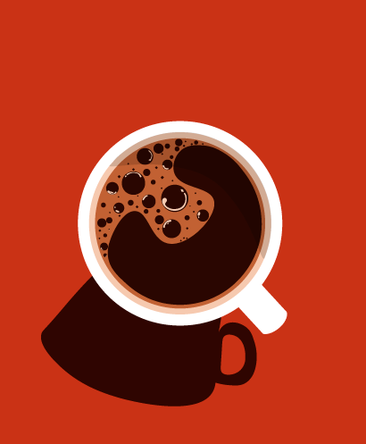
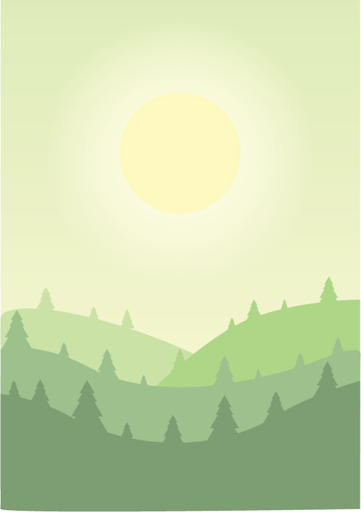

KREATIV PORTFOLIO
Velkommen til min kreative legeplads - min Adobe-portfolio! Gennem mine projekter har jeg udforsket de utallige muligheder, som Adobe-software tilbyder, og skabt unikke og inspirerende værker. Lad dig fordybe i mine illustrationer, fotomanipulationer og grafiske designs, og lad os sammen blive fortabt i en verden af kreativitet og fantasi.
PHOTOSHOP
Business card

Jeg startede processen med at udvikle en elegant forside og bagside til forretningskortene, der var designet til at præsentere virksomhedens brand på en professionel måde. Efter at have oprettet det grundlæggende design, udforskede jeg forskellige mønstre i Photoshop for at tilføje en ekstra dimension af visuel interesse og skabe et unikt udseende for kortene.
NatGeo plakat

Med inspiration fra den ikoniske stil og æstetik, der kendetegner National Geographic, besluttede jeg mig for at udforske mine færdigheder inden for billederedigering i Photoshop ved at skabe en plakat, der hylder deres unikke visuelle identitet. Jeg ønskede at fange essensen af NatGeos dybdegående og visuelt slående billeder samt deres evne til at formidle historier gennem stærke visuelle elementer.
Is reklame plakat

Min vision for plakaten var at skabe en spændende og indbydende markedsføringsannonce for en chokoladeis ved hjælp af Photoshop. Jeg eksperimenterede med forskellige designelementer og brugte PNG-billeder for at skabe et farverigt og appetitligt udtryk. Jeg arbejdede samtidig på at udvikle et kreativt firmanavn og et mundvandende isnavn, der ville skille sig ud på markedet.
ILLUSTRATOR
Kaffe illustration
Jeg har udforsket brugen af forskellige tegneværktøjer i Adobe Illustrator, mens jeg arbejdede på at skabe et billede af en kaffekop. Min fokus lå især på at tilføje skyggeeffekter for at give koppen en mere realistisk og dimensionel udseende. Jeg udforskede forskellige teknikker og arbejdede på at forfine detaljerne for at opnå det ønskede resultat.
Baggrunds billede
Jeg udforskede kunstnerisk skabelse ved at designe en baggrundsilustration. Min primære fokus lå på at lege med forskellige glødende effekter for at give solen en mere realistisk fremtoning. Ved at eksperimentere med lys og skygger stræbte jeg efter at skabe en livlig sol, der trak opmærksomhed. Mit mål var at mestre forskellige teknikker og opnå den ønskede visuelle effekt, hvilket resulterede i en imponerende baggrund til min illustration.
Paper cut

Jeg besluttede mig for at udforske papircut-effekten i Illustrator for at opnå en imponerende 3D-effekt. Denne teknik er kendt for at skabe et dybdegående og realistisk udseende, der tilføjer en unik dimension til illustrationer. Ved at eksperimentere med lag og skyggeeffekter arbejdede jeg på at skabe et imponerende visuelt resultat, der fangede opmærksomheden og tilføjede dybde til min illustration.